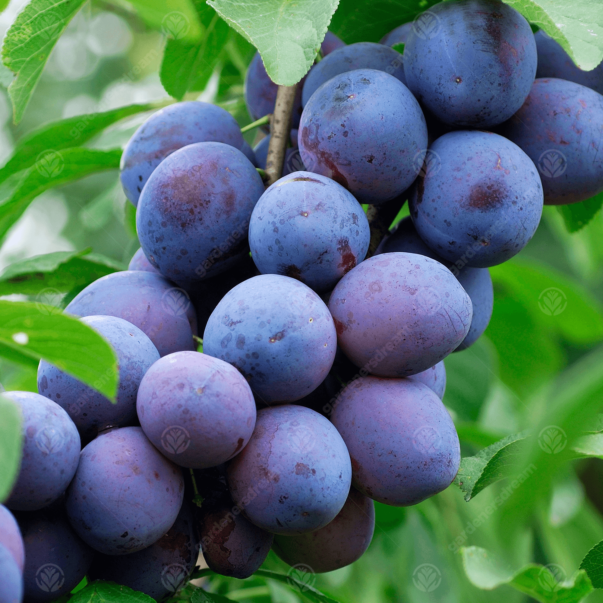

Šljivovica je pice od šljive.
Opština ugljevik je poznata po
proizvodnji šljiva.
Samim tim
konkurencija je velika.
Ljepotica je dobila brojne nagrade.

Kovačeva kći je vrhunsko pice
od Kajsije.Miris tipičan za rakiju
proizvedena od zrelih plodova
kajsija,dubinskog karaktera.
Impresija je vrhunsk pice od kruške
vilijamovke.Miris tipičan za pice
proizvedeno od kruške sorte
vilijamovka, intenzivan, dozirane
prijatne
cvjetne svježine.